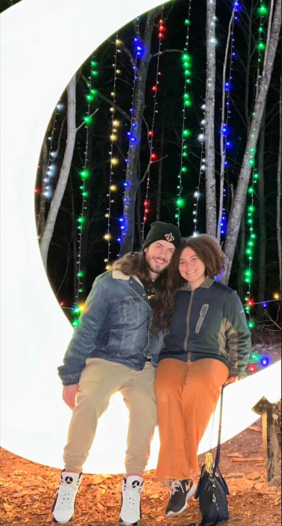

About Me
Hello, my name is Kenneth Weed, and I was born on October 16th, 1998 in Grand Haven, MI. At a young age I moved to Griswold, CT and spent the rest of my childhood in Griswold. I graduated in 2016, and shortly thereafter joined the Coast Guard. After my time in the military, I moved back to Griswold. I bounced around jobs until I met my fiance at the end of 2019. I moved into my apartment with my fiance less than two weeks before the onset of the Covid-19 pandemic. Once restrictions began to lessen around 2021, I began school at CCRI and graduated in May of 2023 with a general studies associate's degree. I briefly attended school at URI, before transferring into NEIT at the beginning of the 2024 Spring semester. I am currently enrolled for an associate's degree in Cybersecurity, and am on track to graduate by Summer 2025, and greatly look forward to the rest of my time at NEIT. My goal once I graduate NEIT is for myself and my fiance to move up to Maine, preferably far north in a city such as Augusta, or even further north close to the border of Canada and Maine.
